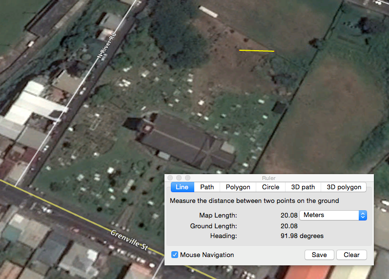
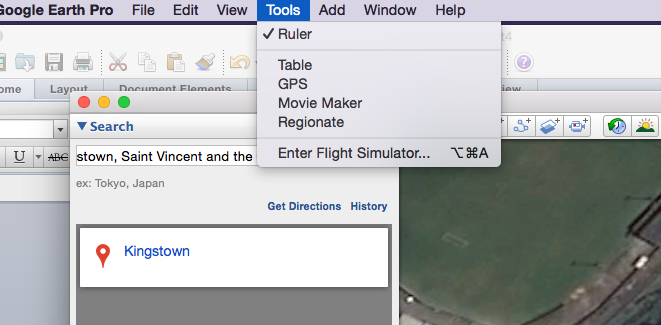
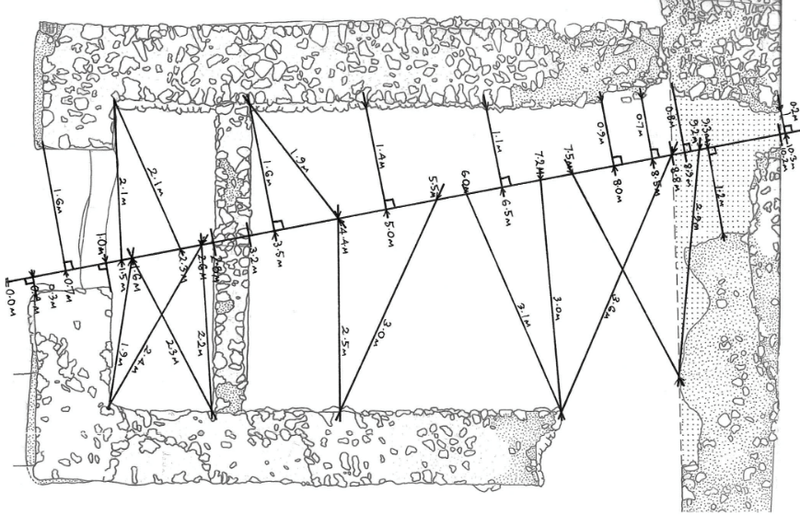

Toolkit
Sensing Place
How to study old buildings and cemeteries?
Niall Finneran: Niall.Finneran@winchester.ac.uk
Christina Welch: Christina.Welch@winchester.ac.uk
Buildings are very important because they embody a huge amount of social history, meaning and memory. You don’t have to be an architect or surveyor to understand important elements of a building’s history. There are some very basic questions and approaches to take.
The first question you always ask is where is it? This might be obvious, but the name of the street, town or village is important to record. You can use GPS (Global Positioning System) on your phone to tell you where you are, and if you use Google Earth you can access a whole range of really good quality satellite photographs.
The photograph below is a screenshot of the cemetery and plan of St George’s Cathedral as seen from space. You could easily print this out and trace over this to produce a clear and easily readable ground plan of the building. The website also gives us the GPS co-ordinates of the site too. Note the yellow line; I drew this using the ruler tool. This gives you horizontal measure control (here 20 metres). You must always have an indication of scale on the photograph or drawing or else you’ll never know how big it is.
The next question to ask is what type of building it is. Here some very basic definitions of building types to use:
- Agriculture (barn, or shed)
- Civil (parliament building; Government office)
- Commemorative (a statue, or fountain)
- Communications (a telephone box, or telephone exchange)
- Defence (a fort)
- Domestic (a house)
- Education (a school)
- Gardens, parks and urban spaces (Botanical Gardens)
- Health and welfare (hospital)
- Industrial (factory)
- Maritime (the port)
- Recreational (a playground, a theatre)
- Religious, ritual and funerary (a church or a grave)
- Transport (a road or garage)
- Water supply and drainage (culverts and cisterns)
One you have decided what the building functions as (and be aware that buildings can change their use over time: we call this re-purposing), what is it made from? Buildings can be made from stone, brick concrete, plastered or left bare, or very rarely (because they will not survive as well) wood. Many historic buildings have been lost through development, fire, accident or war.
We would then want to know what for the roof took, is it thatched, or slated, or tiled? Sketch the front of the building in freehand (we call this the elevation) and try at least to pace out some of the main distances to convey a sense of size and proportion. If you have a long tape measure, then even better. Look closely at the window frames and the doors, and are there any obvious indications of where bits of the building have been added later, or indeed parts taken away? Is the building still inhabited? Old maps are useful for determining how old a building is, but sometimes it is just guesswork.
The same principles of looking and planning and sketching apply to the study of cemeteries and graveyards, which again are important sources of social history. Again the first question is where is it. You can answer this by using Google Earth, and when constructing a plan of the graveyard (i.e. a bird’s eye view) make sure that you indicate the horizontal scale. Measuring is very important in any form of survey.
You could construct your own plan of a graveyard (and this applies to any form of site). You need two long tape measures (and don’t forget to work in metric even if you are used to Imperial measurements).
Take one tape and lay it out along the ground (we often do this along straight compass bearings either north south or east west through a site). This is your baseline. Moving along this tape at say 1 metre intervals, measure off at ninety degrees to the edges of the graveyard, keeping a strict right angle between the tapes (we call this offsetting). As you move along the tape should out your measurements to a note taker. It is often best to roughly sketch the plan of the site out first and then scribble in the accurate measurements.
If you chose to comprehensively survey a cemetery it is useful to construct a survey form that allows for consistency of information recording. You’ll want to number each and every grave with its won unique identification number with its location (is it a Protestant or Catholic graveyard, for example, or maybe has Muslim or Jewish graves?). You’ll want space to describe the shape of the grave, the stone, the type of material it is made from, the inscription and its shape.
You might want to think about using these headings:
- Location
- Grave number
- Sketch grave shape
- Give dimensions of grave and stone
- Writing on the grave
- Materials used
It is important to photograph the graves as well to back up your written information, but (this is very important) make sure that your photographs can be related to the written record. Bring along a chalk board or whiteboard, and also a horizontal scale such as ruler, and write the grave number on the board. Make sure it is visible against the grave along with the horizontal scale when you come to photograph it.
The next stage is to analyse the material. You might be able to relate different grave shapes to different dates, people or areas of the cemetery. Some materials might not be used anymore.
The language as well as design changes, and this reflects social attitudes to death changing. These might be some themes you pick up on as well. Don’t just concentrate on old graves either, all forms of memorial can tell us a lot about peoples sense of place.
Surveying buildings and cemeteries are fundamentally the same. The trick is to make sure that the measurements of sites and artefacts can be easily understood, and when you take a picture of something, you know what it is!